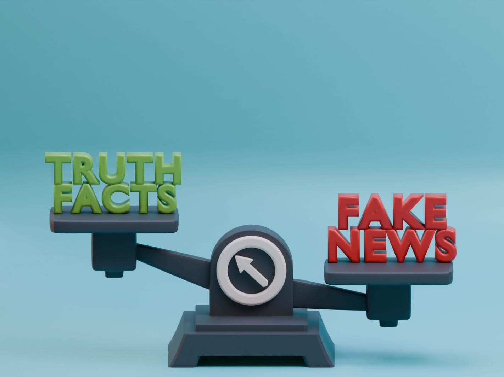
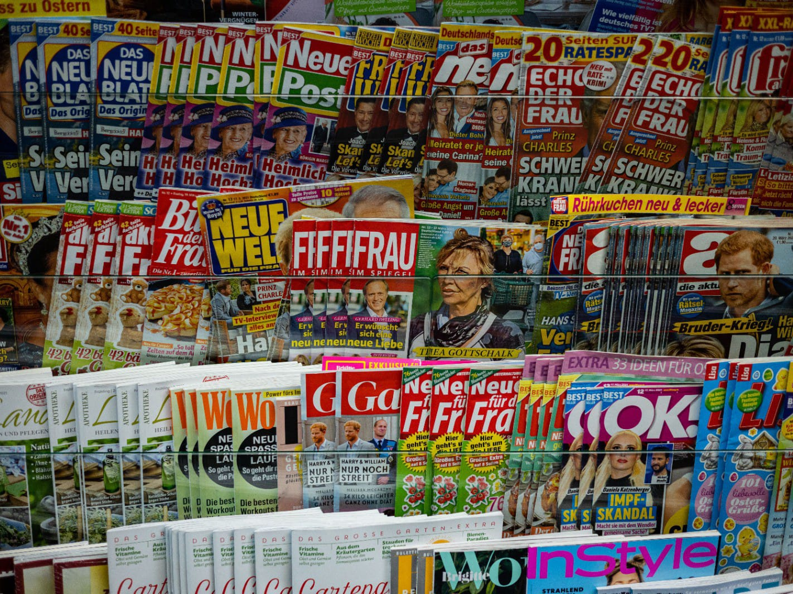

GALERIA DE IMAGENS DA PENTEFINO©
A Pentefino busca ajudar usuários a se livrarem da desinformação, contudo selecionamos uma galeria informativa para auxiliar os usuários a compreender a proposta do site.
Fonte: Pexels
Autor(a): Kelly

Fonte: Pexels
Autor(a): Hartono Creative Studio

Fonte: Freepik
Autor(a): Autor Desconhecido

Fonte: Unsplash
Autor(a): Joshua Photos

Fonte: Unsplash
Autor(a): Tyler Russo
Fonte: Unsplash
Autor(a): Diego Mendonza

Fonte: Pexels
Autor(a): Kelly

Fonte: Pexels
Autor(a): Diamond Productions
DEBATE ACERCA DA DESINFORMAÇÃO
Separamos um video no qual aprofunda o assunto do nosso site, com Debate e transparência acerca das informações
Canal de autoria do Video: Canal History Brasil
Precisa de uma Ajudinha ?
Ouça um breve audio explicando como identificar notícias falsas e evitar compartilhar desinformação.